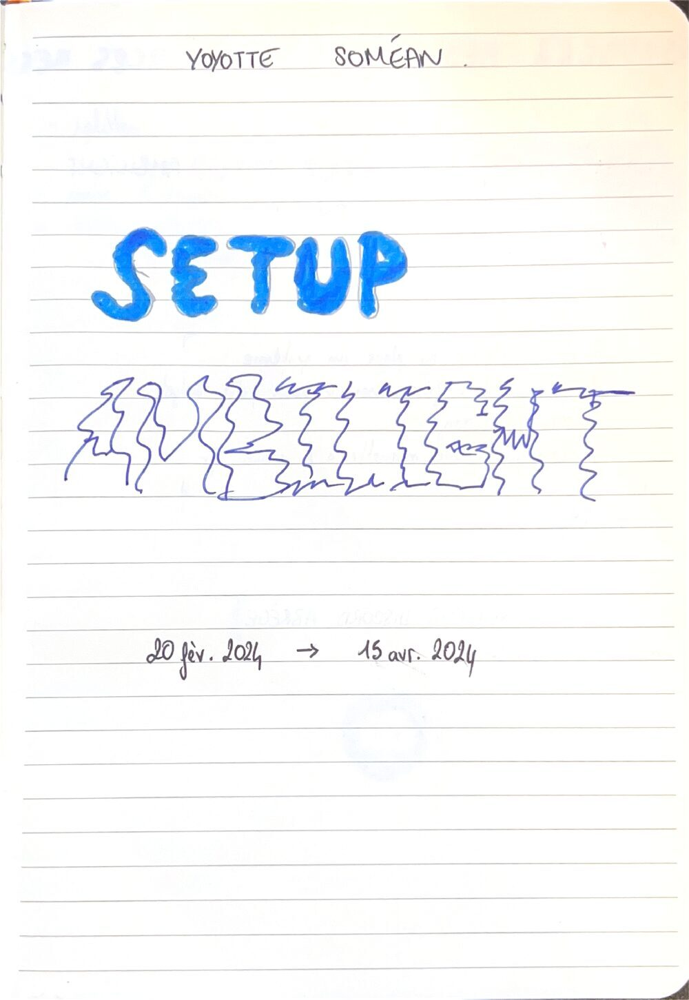
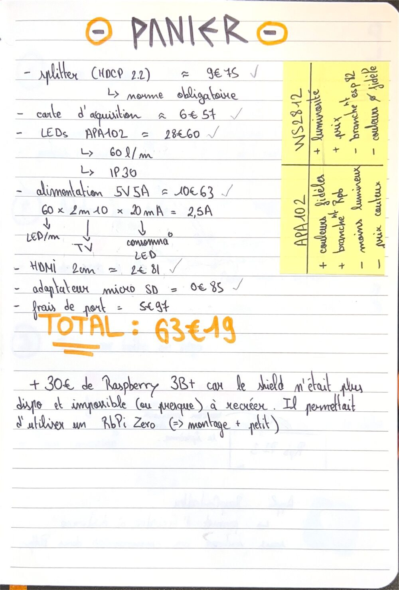
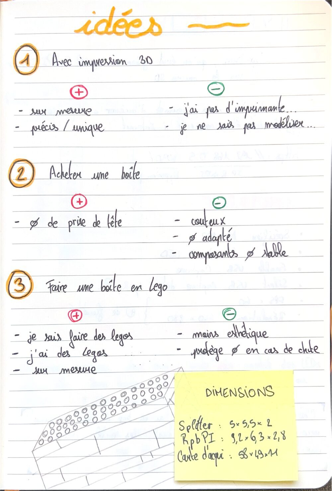

Projet perso · Février à avril 2024 · Terminé
Ambilight maison
Des LED derrière la télé qui reprennent en direct les couleurs de l'image, comme le système Ambilight de Philips. Je l'ai conçu, acheté, câblé et réparé moi-même, pour environ 93 €.
Le principe
Le signal HDMI de la console passe par un splitter : une sortie va à la télé, l'autre à une carte d'acquisition branchée en USB sur le Raspberry Pi. Le logiciel Hyperion analyse les bords de l'image et envoie la bonne couleur à chaque LED du bandeau collé derrière la télé.

Choisir les LED
J'ai comparé deux bandeaux courants avant d'acheter :
| APA102 (choisi) | WS2812 | |
|---|---|---|
| Points forts | Couleurs fidèles, se branche directement sur le Raspberry Pi | Plus lumineux, moins cher |
| Points faibles | Moins lumineux, plus cher | Couleurs moins fidèles, demande un ESP82 |
Dimensionner l'alimentation
Avec 60 LED par mètre sur 2,10 m de télé, et environ 20 mA par LED :
60 × 2,10 × 20 mA ≈ 2,5 A
J'ai pris une alimentation 5 V / 5 A pour garder une bonne marge.
Le budget
| Splitter HDMI (norme HDCP 2.2 obligatoire) | 9,75 € |
| Carte d'acquisition | 6,57 € |
| Bandeau LED APA102, 60 LED/m, IP30 | 28,60 € |
| Alimentation 5 V 5 A | 10,63 € |
| Câble HDMI 2 m | 2,81 € |
| Adaptateur micro SD | 0,85 € |
| Frais de port | 5,97 € |
| Total | 63,19 € |
Plus 30 € de Raspberry Pi 3 B+ : le shield prévu pour un Raspberry Pi Zero, plus petit, n'était plus disponible.
Le logiciel
J'ai installé HyperBian sur la carte micro SD avec Raspberry Pi Imager, puis réglé Hyperion depuis son interface web, à l'adresse du Raspberry Pi sur le port 8090 : type de LED APA102, nombre de LED, capture USB, 60 images par seconde en 640 × 480 pour plus de fluidité.

Ce qui n'a pas marché, et comment je l'ai réparé
Les LED n'étaient pas reconnues
En théorie tout était bon, en pratique rien ne s'allumait. Après beaucoup de recherches : les câbles de données étaient inversés.
La moitié du bandeau s'est éteinte
Quelques semaines plus tard, seule la moitié des LED répondait. Au voltmètre, j'ai trouvé 2 LED endommagées. Je les ai découpées et remplacées par des connecteurs 4 broches à 1,85 €, au lieu de racheter tout le bandeau.

Le boîtier en Lego
Les cartes étaient à nu, il fallait les protéger. J'ai comparé trois options : un boîtier imprimé en 3D (sur mesure, mais je n'ai pas d'imprimante), un boîtier acheté (simple, mais pas adapté à mes cartes) ou un boîtier en Lego. J'ai choisi les Lego : j'en avais déjà, et je pouvais le construire sur mesure à partir des dimensions de chaque carte. Il est fixé au mur, derrière la télé.


Le carnet de bord


